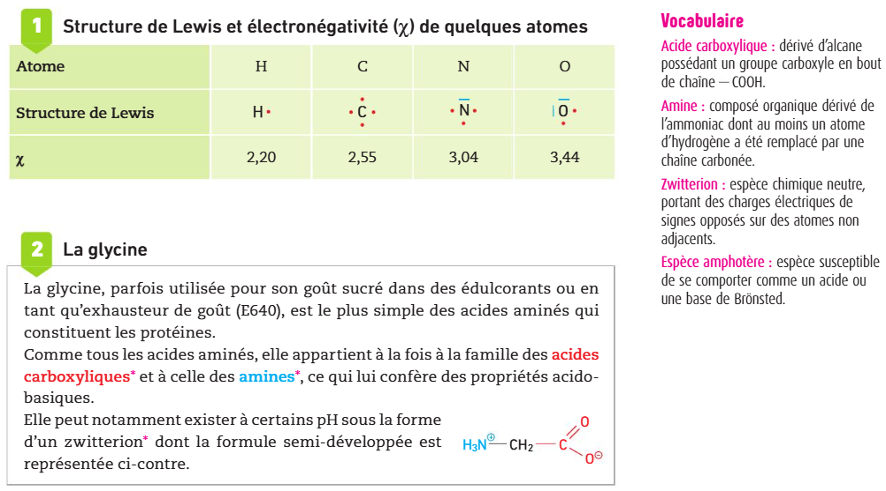

I.1 – pH d'une solution aqueuse
soit [H3O+] = 10−pH × C°
Le pH quantifie l'acidité d'une solution aqueuse (grandeur sans unité).
Plus [H3O+] est élevée, plus le pH est faible, plus la solution est acide.
I.2 – Équilibre acido-basique
➔ Si la dissolution d'un composé chimique dans l'eau diminue le pH, ce composé est un acide ; si elle augmente le pH, ce composé est une base.
| Méthode | Précision | Remarque |
|---|---|---|
| Indicateur coloré | faible (1 à 2 unités) | Rapide, qualitatif |
| Papier pH | ±1 unité | Semi-quantitatif |
| pH-mètre étalonné | ±0,01 unité | Quantitatif, indispensable en TP |
Mesure le pH de différentes solutions et observe l'effet de la dissolution — idéal pour explorer avant I.3.
📝 Application – Calcul de pH et de [H₃O⁺]
- Solution 1 : [H₃O⁺] = 5,0 × 10–4 mol·L–1
- Solution 2 : pH = 3,5
I.3 – Théorie de Brønsted-Lowry
Une base est une entité chimique susceptible d'accepter au moins un ion H+.
Un couple acide/base AH / A– est lié par l'équilibre de Brønsted :
Exemple : H2O est la base de H3O+/H2O et l'acide de H2O/HO–.
Les acides carboxyliques (–COOH) sont des acides faibles ; les amines (–NH2) sont des bases faibles.
• Acide carboxylique : R–C(=O)–O–H → donne H+ sur le groupement –OH
• Ion carboxylate : R–C(=O)–O– (doublets non liants sur les deux O)
• Amine : R–NH2 (doublet non liant sur N)
• Ion ammonium : R–NH3+
📝 Application – Calcul de pH
- Solution A : [H3O+] = 1,0 × 10–3 mol·L–1
- Solution B : pH = 11,0
- Solution C : [HO–] = 2,0 × 10–4 mol·L–1 (à 25 °C)
II.1 – Transfert de proton
En solution, les équilibres de Brønsted des deux couples se combinent :
B– + H+ ⇌ HB (couple 2 : HB/B–)
HA + B– ⇌ A– + HB
II.2 – Équilibre chimique et symbolisme
➔ Lorsqu'une réaction est totale : l'équation s'écrit avec une flèche simple → et le réactif limitant est totalement consommé : xf = xmax.
➔ Lorsqu'une réaction n'est pas totale, elle est limitée ; elle conduit à un équilibre avec coexistence des réactifs et des produits : l'équation s'écrit avec une double flèche ⇌ et le réactif limitant n'est pas entièrement consommé : xf < xmax.
➔ Le taux d'avancement (Tau, noté ici T) est défini par : T = xf / xmax.
Si T = 1 → réaction totale | Si T < 1 → réaction à l'équilibre.
| Type | Écriture | Condition | τ |
|---|---|---|---|
| Réaction totale | HA + B– → A– + HB | xf = xmax | τ = 1 |
| Réaction à l'équilibre | HA + B– ⇌ A– + HB | xf < xmax | τ < 1 |
| État | x (mmol) | n(HA) (mmol) | n(B–) (mmol) | n(A–) (mmol) | n(HB) (mmol) |
|---|---|---|---|---|---|
| Initial | 0 | 1,00 | 1,00 | 0 | 0 |
| En cours | — | — | — | — | — |
| Final | — | — | — | — | — |
📝 Totale ou équilibre ?
II.3 – Autoprotolyse de l'eau et produit ionique Ke
L'eau est amphotère. Elle possède deux couples :
H2O est l'acide
H2O est la base
pKe = –log Ke = 14,0 à 25 °C
📝 Identifier acide et base dans une réaction
HF + H2O ⇌ F– + H3O+
📝 Exercice guidé — Démontrer qu'une solution acide a un pH < 7
L'objectif est de démontrer par le raisonnement qu'une solution acide a un pH < 7.
III.1 – Acides forts et bases fortes
Bases fortes courantes : NaOH (soude), KOH (potasse) → se dissocient totalement : Na+ + HO–.
III.2 – Acides faibles et bases faibles
Tableau d'exemples de couples acide faible / base faible :
| Acide faible | Base conjuguée faible |
|---|---|
| HCO2H (ac. méthanoïque / formique) | HCO2– (ion méthanoate / formiate) |
| CH3CO2H (ac. éthanoïque / acétique) | CH3CO2– (ion éthanoate / acétate) |
| C6H5CO2H (ac. benzoïque) | C6H5CO2– (ion benzoate) |
| CO2 / H2O (dioxyde de carbone dissous) | HCO3– (ion hydrogénocarbonate) |
| NH4+ (ion ammonium) | NH3 (ammoniac) |
📝 Classer : acide fort ou acide faible
Glissez chaque espèce dans la bonne colonne.
📝 Calcul de pH – Acide chlorhydrique 0,050 mol·L–1
IV.1 – Définition de Ka
Pour la réaction d'équilibre : HA + H2O ⇌ A– + H3O+
Relation de Henderson-Hasselbalch :
Ka = [H3O+]·[A–] / ([HA]·C°)
→ [H3O+] / C° = Ka × [HA] / [A–]
→ –log([H3O+] / C°) = –log(Ka) + log([A–] / [HA])
→ pH = pKa + log([A–] / [HA])
IV.2 – Domaine de prédominance
À partir de pH = pKa + log([A–]/[HA]) :
| Condition | Conséquence | Forme majoritaire |
|---|---|---|
| pH < pKa | log([A–]/[HA]) < 0 → [A–] < [HA] | Forme acide HA |
| pH = pKa | log([A–]/[HA]) = 0 → [A–] = [HA] | Les deux en quantités égales |
| pH > pKa | log([A–]/[HA]) > 0 → [A–] > [HA] | Forme basique A– |
📝 Application – Acide éthanoïque à 0,10 mol·L–1
📝 Exercice guidé — Démonstration de la relation de Henderson
L'objectif est de démontrer la relation : pH = pKA + log([A–]éq / [AH]éq).
📝 Simulateur – Calcul de pH selon l'espèce et la concentration
1 – Indicateurs colorés
Un indicateur coloré est un couple AHind/Aind– dont les deux formes ont des couleurs différentes. Selon le pH du milieu, l'une des formes prédomine :
| Indicateur | pKa | Zone de virage | Couleur acide (AHind) | Couleur basique (Aind–) |
|---|---|---|---|---|
| Hélianthine (orange de méthyle) | ≈ 3,5 | 3,1 – 4,4 | Rouge | Jaune |
| Rouge de méthyle | ≈ 5,1 | 4,4 – 6,2 | Rouge | Jaune |
| Bleu de bromothymol (BBT) | ≈ 7,0 | 6,0 – 7,6 | Jaune | Bleu |
| Phénolphtaléine | ≈ 9,4 | 8,2 – 10,0 | Incolore | Rose |
Choix pour un titrage : la zone de virage de l'indicateur doit encadrer le pH à l'équivalence.
📝 Choisir un indicateur coloré
2 – Solution tampon
- Composée d'un acide faible HA et de sa base conjuguée A– en concentrations voisines.
- pH ≈ pKa avec pKa – 1 < pH < pKa + 1 (zone optimale de tamponnage).
- Lorsque pH = pKa : [HA] = [A–] → pouvoir tampon maximal.
📝 QCM – Propriétés d'une solution tampon
📝 Solution tampon – CH₃CO₂H / CH₃CO₂⁻
Comparez l'effet d'un ajout d'acide fort (HCl) sur une solution tampon vs une solution non tamponnée.
Tampon : CH₃CO₂H / CH₃CO₂⁻ à pKa = 4,75 — concentrations égales c = 0,10 mol·L⁻¹ — Volume = 100 mL.
3 – Acides α-aminés
Un acide α-aminé possède un atome de carbone portant à la fois un groupe –COOH et un groupe –NH2. Il a donc deux pKa :
| Couple | pKa (ordre de grandeur) |
|---|---|
| –COOH / –COO– | pKa1 ≈ 2 (acide plus fort) |
| –NH3+ / –NH2 | pKa2 ≈ 9–10 (acide plus faible) |
Elle prédomine pour pKa1 < pH < pKa2.

Activité 1 : Structure des acides et des bases
Notions : Schéma de Lewis · Électronégativité · Liaison polarisée · Espèce amphotère
Comment relier les propriétés des acides et des bases de Brønsted à leur structure ?
Les propriétés des acides et des bases de Brønsted sont reliées à leur structure. L'objectif de cette activité est de représenter le schéma de Lewis et la formule semi-développée d'un acide carboxylique, d'un ion carboxylate, d'une amine et d'un ion ammonium.
Doc. 1 — Structure de Lewis et électronégativité · Doc. 2 — La glycine


1. Ion hydrogène H⁺
Représenter le schéma de Lewis d'un ion hydrogène H⁺ (doc. 1). Expliquer pourquoi cet ion est susceptible d'accepter un doublet d'électrons qui lui serait cédé.
2. Acide méthanoïque
a. Donner le schéma de Lewis de l'acide méthanoïque.
b. Montrer que cette molécule comporte une liaison polarisée impliquant un atome d'hydrogène.
c. Si cette liaison venait à se rompre, quel atome partirait avec le doublet d'électrons de la liaison ? Donner les structures de Lewis des deux ions résultant de la rupture de cette liaison.
3. Ammoniac et méthylamine
La méthylamine est obtenue après substitution, dans la molécule d'ammoniac NH₃, d'un atome d'hydrogène par un groupe méthyle.
a. Après avoir donné le schéma de Lewis de l'ammoniac, représenter celui de la méthylamine (doc. 1). Quel atome porte ici un doublet non liant ?
b. Pour chacune des deux molécules, en déduire le schéma de Lewis de l'ion résultant de l'association de cet atome avec un ion hydrogène H⁺. Justifier. Ces ions ont-ils des liaisons polarisées ?
4. La glycine
La glycine (doc. 2) existe sous différentes formes acido-basiques.
a. Donner le schéma de Lewis du zwitterion représenté.
b. Montrer qu'il s'agit d'une espèce amphotère en donnant le schéma de Lewis et la formule semi-développée de son acide conjugué, puis de sa base conjuguée.
1. H⁺ : aucun doublet, aucun électron autour du noyau (schéma de Lewis réduit au symbole H⁺). L'atome H a perdu son unique électron de valence : sa couche externe est donc vide. H⁺ peut ainsi accepter un doublet d'électrons cédé par une autre espèce (une base de Lewis) pour retrouver la configuration stable du duet (2 électrons), comme l'hélium.
2.a Acide méthanoïque : H–C(=O)–O–H, avec deux doublets non liants sur l'oxygène doublement lié et deux doublets non liants sur l'oxygène du groupe –O–H.
2.b La liaison O–H est polarisée : χ(O) = 3,44 et χ(H) = 2,20 (doc. 1), soit un écart Δχ = 1,24, largement supérieur au seuil de polarisation. L'oxygène, plus électronégatif, porte une charge partielle δ⁻ et l'hydrogène une charge partielle δ⁺ : Oδ––Hδ+.
2.c L'oxygène, plus électronégatif, garde le doublet de la liaison : la rupture est hétérolytique. Il se forme l'ion méthanoate HCOO⁻ (H–C(=O)–O⁻, avec 3 doublets non liants sur l'oxygène chargé –) et l'ion hydrogène H⁺ (aucun doublet).
3.a Ammoniac NH₃ : N lié à 3 atomes H par liaison simple, avec un doublet non liant sur N. Méthylamine CH₃–NH₂ : N lié à 2 atomes H et au groupe CH₃, avec également un doublet non liant sur N. Dans les deux cas, c'est l'atome d'azote N qui porte le doublet non liant.
3.b NH₃ + H⁺ → NH₄⁺ (ion ammonium) : le doublet non liant de N forme une nouvelle liaison N–H avec H⁺ ; N porte alors 4 liaisons, plus aucun doublet non liant, et une charge formelle +. CH₃–NH₂ + H⁺ → CH₃–NH₃⁺ (ion méthylammonium) : même raisonnement, N porte alors 2 liaisons N–H d'origine, 1 liaison N–C et la nouvelle liaison N–H, sans doublet non liant, avec une charge formelle +. Dans les deux ions, les liaisons N–H sont polarisées (χ(N) = 3,04 > χ(H) = 2,20) : Nδ––Hδ+.
4.a Zwitterion de la glycine H₃N⁺–CH₂–COO⁻ : le groupe H₃N⁺– est construit comme l'ion ammonium (3.b, N sans doublet non liant, charge +) ; le groupe –COO⁻ est construit comme l'ion méthanoate (2.c, un O doublement lié avec 2 doublets non liants, un O⁻ simplement lié avec 3 doublets non liants).
4.b Acide conjugué (ajout d'un H⁺ sur le doublet non liant disponible de l'oxygène du carboxylate) : H₃N⁺–CH₂–COOH, cation de charge +1. Base conjuguée (départ d'un H⁺ porté par un groupe N–H, qui redonne un doublet non liant sur N) : H₂N–CH₂–COO⁻, anion de charge –1. Le zwitterion peut donc à la fois céder un proton (comme un acide, vers H₂N–CH₂–COO⁻) et en capter un (comme une base, vers H₃N⁺–CH₂–COOH) : c'est une espèce amphotère.
Activité 2 : Contrôle qualité d'un déboucheur industriel
Notions : pH · Relation pH = –log([H₃O⁺]/c°) · Dilution · Fonction logarithme décimal
Comment déterminer le pH d'une solution à partir de sa concentration en quantité d'ion oxonium H₃O⁺(aq), et vice versa ?
Avant de commercialiser un stock de flacons de déboucheur industriel puissant, un technicien doit s'assurer de la concentration en quantité d'ion oxonium de leur contenu. Il procède pour cela à la mesure du pH de cent échantillons.
Document — Matériel disponible

Données — Logarithme décimal et dilution

1. Analyser-Raisonner
Proposer un protocole permettant de répondre à la question posée.
2. Réaliser
Mettre en œuvre le protocole proposé après validation par le professeur. Présenter les résultats obtenus dans un tableau.
3. Analyser-Raisonner
Proposer des relations mathématiques entre le pH d'une solution d'acide chlorhydrique et la concentration en quantité d'ion oxonium qu'elle contient.
4. Valider
Préparer une solution d'acide chlorhydrique de concentration en quantité d'ion H₃O⁺ supérieure à 0,5 mmol·L⁻¹, puis mesurer son pH afin de valider la relation proposée.
1. Protocole : à partir de la solution mère d'acide chlorhydrique (H₃O⁺(aq), Cl⁻(aq)) de concentration c, réaliser deux dilutions successives d'un facteur 10 à l'aide d'une pipette jaugée et de fioles jaugées adaptées (prélever un volume V, compléter jusqu'au trait de jauge d'une fiole de volume 10 × V) pour obtenir une solution fille 1 de concentration c/10, puis une solution fille 2 de concentration c/100. Mesurer le pH de la solution mère et de chacune des deux solutions filles à l'aide du pH-mètre préalablement étalonné, en rinçant et essuyant la sonde entre chaque mesure.
2. Exemple de résultats (solution mère c = 5,00 × 10⁻² mol·L⁻¹, acide fort donc [H₃O⁺] = c) :
[H₃O⁺] (mol·L⁻¹) : 5,0 × 10⁻² | 5,0 × 10⁻³ | 5,0 × 10⁻⁴
pH mesuré : 1,3 | 2,3 | 3,3
3. Chaque dilution par 10 fait augmenter le pH d'une unité : cela correspond à une relation logarithmique. En posant [H₃O⁺] = 10–pH × c° (avec c° = 1 mol·L⁻¹), on retrouve bien les valeurs du tableau. La relation entre pH et [H₃O⁺] est donc : pH = –log([H₃O⁺]/c°), et sa réciproque : [H₃O⁺] = 10–pH × c°.
4. Pour une solution de concentration en H₃O⁺ supérieure à 0,5 mmol·L⁻¹ = 5,0 × 10⁻⁴ mol·L⁻¹, la relation prévoit un pH inférieur à –log(5,0 × 10⁻⁴) = 3,3. La mesure expérimentale du pH de cette nouvelle solution, si elle est cohérente avec cette valeur théorique (aux incertitudes de mesure près), valide la relation pH = –log([H₃O⁺]/c°) proposée en 3.
Activité 3 : Force d'un acide DIFFÉRENCIATION
Notions : Acide faible et base faible · Résolution d'une équation du second degré · Programmation Python
Comment relier la force d'un acide faible à la valeur de la constante d'acidité Ka du couple ?

Les kakis sont des fruits très riches en vitamine C, espèce chimique également appelée acide ascorbique. Il s'agit de l'acide faible d'un couple noté AscH / Asc–.
Donnée 1 — Couples acide-base

Donnée 2 — Avancement

1. S'approprier
Réécrire le tableau d'avancement en faisant intervenir l'état final le taux d'avancement final τ = xf/xmax.
2. Analyser-Raisonner
Établir la relation : Ka = cτ² / (c° × (1 – τ))
3. Réaliser 🐍 PYTHON
a. Modifier le fichier fourni par le professeur afin de déterminer la valeur du taux d'avancement final τ pour des valeurs de paramètres c et pKa choisis par l'utilisateur. Les lignes demandant pKa et c à l'utilisateur sont déjà écrites : complète les lignes suivantes (initialisation, boucle et affichage).
print(...). Syntaxe la plus simple : print(tau). Pour un affichage plus lisible façon « phrase », sépare le texte (entre guillemets) et la variable par une virgule : print("Le taux d'avancement final vaut :", tau). Tu peux aussi arrondir l'affichage avec '{:.1e}'.format(tau) (notation scientifique à 1 chiffre après la virgule).b. Exécuter le programme pour déterminer la valeur de τ pour chacun des trois acides faibles (donnée 1), pour une même concentration en quantité de soluté apporté c = 1 mmol·L⁻¹.
Programme à compléter (niveau standard — la boucle est déjà écrite, et les lignes demandant pKa et c sont déjà données ; complète les lignes restantes) :
4. Analyser-Raisonner
Un acide est dit d'autant plus fort que la transformation modélisée par le transfert d'ion hydrogène avec l'eau est avancée. Répondre à la question posée en introduction à l'aide des résultats obtenus.
5. Valider
Résoudre l'équation du second degré d'inconnue τ établie à la question 2. dans le cas de l'acide ascorbique et comparer les résultats obtenus par le calcul littéral et par l'outil numérique.
1. Avec xmax = n : à l'état final, avancement xf = τn ; n(Acide) = n – τn = n(1–τ) ; n(Base) = τn ; n(H₃O⁺) = τn.
2. En divisant par le volume V (avec c = n/V) : [Acide]éq = c(1–τ) ; [Base]éq = cτ ; [H₃O⁺]éq = cτ. En reportant dans Ka = [Base]éq×[H₃O⁺]éq / ([Acide]éq×c°) : Ka = (cτ)(cτ) / (c(1–τ)×c°) = cτ² / (c°(1–τ)).
3. Programme correct, exécutable ci-dessous.
🟩 En vert : parties ajoutées par rapport à la version à compléter (niveau standard).
Résultats pour c = 1 mmol·L⁻¹ :
AscH/Asc– (pKa = 4,1) : τ ≈ 0,245 (24,5 %) — CH₃COOH/CH₃COO⁻ (pKa = 4,8) : τ ≈ 0,118 (11,8 %) — NH₄⁺/NH₃ (pKa = 9,2) : τ ≈ 7,9 × 10⁻⁴ (0,079 %).
4. τ(AscH) > τ(CH₃COOH) > τ(NH₄⁺) : la transformation avec l'eau est d'autant plus avancée que le pKa est petit (Ka grand). L'acide ascorbique, dont le pKa est le plus petit des trois, est donc le plus fort des trois acides faibles étudiés : plus Ka est grand, plus l'acide faible est fort.
5. Ka = cτ²/(c°(1–τ)) ⟺ cτ² + Kaτ – Ka = 0 (avec c° = 1 mol·L⁻¹). Pour l'acide ascorbique : a = c = 1×10⁻³, b = Ka = 10⁻⁴,¹ ≈ 7,94×10⁻⁵, ccoef = –Ka ≈ –7,94×10⁻⁵. Δ = b² – 4accoef ≈ 3,24×10⁻⁷, donc √Δ ≈ 5,69×10⁻⁴. Les deux racines sont τ₁ = (–b+√Δ)/(2a) ≈ 0,245 et τ₂ = (–b–√Δ)/(2a) < 0. Seule τ₁ ≈ 0,245 est physiquement acceptable (0 ≤ τ ≤ 1) : elle coïncide avec la valeur obtenue par l'outil numérique à la question 3.b.
Exercice 1 — pH d'un acide fort et dilution
On dissout du chlorure d'hydrogène gazeux HCl dans de l'eau pure pour obtenir V = 500 mL d'une solution de concentration en quantité de matière apportée c = 2,0 × 10⁻² mol·L⁻¹.
a. Écrire l'équation de la réaction de HCl avec l'eau. Cette transformation est-elle totale ?
b. Calculer le pH de cette solution.
c. Quel volume d'eau faudrait-il ajouter à cette solution pour obtenir une solution de pH = 2,0 ?
a. HCl(aq) + H₂O(ℓ) → Cl⁻(aq) + H₃O⁺(aq). HCl étant un acide fort, cette transformation est totale (flèche simple) : il ne reste pas de HCl en solution à l'état final.
b. Acide fort → [H₃O⁺] = c = 2,0 × 10⁻² mol·L⁻¹.
pH = –log(c/c°) = –log(2,0 × 10⁻²) ≈ 1,70.
c. Pour pHf = 2,0 : [H₃O⁺]f = 10–pH × c° = 10–2,0 = 1,0 × 10⁻² mol·L⁻¹.
Conservation de la quantité de matière lors de la dilution : c × V = cf × Vf, donc Vf = (c × V) / cf = (2,0 × 10⁻² × 500) / (1,0 × 10⁻²) = 1,00 × 10³ mL = 1,00 L.
Volume d'eau à ajouter : Vf – V = 1,00 L – 0,500 L = 0,500 L (500 mL).

Exercice 35 — Produits ménagers
Les solutions aqueuses de « sel d'oseille » (acide oxalique) sont utilisées pour leurs propriétés détachantes. L'ammoniaque a des propriétés dégraissantes.
Données
- L'ammoniaque est une solution aqueuse d'ammoniac NH₃.
- Couples acide-base : C₂HO₄⁻/C₂O₄²⁻ ; NH₄⁺/NH₃.
- Formule brute de l'acide oxalique : C₂H₂O₄.
- Schéma de Lewis de l'ion hydrogénoxalate ci-contre.

a. Montrer que le couple acide oxalique-ion hydrogénoxalate est un couple acide-base.
b. Écrire les six équations des réactions acide-base qui peuvent avoir lieu entre les cinq espèces chimiques dissoutes dont les formules sont données ci-dessus.
c. Identifier la propriété chimique particulière de l'ion hydrogénoxalate ainsi mise en évidence.
a. L'acide oxalique C₂H₂O₄ et l'ion hydrogénoxalate C₂HO₄⁻ ne diffèrent que par un ion H⁺ : C₂H₂O₄ ⇌ C₂HO₄⁻ + H⁺ (le schéma de Lewis confirme que C₂HO₄⁻ conserve un groupe –OH intact et un seul groupe –COOH déprotoné en –COO⁻). C₂H₂O₄/C₂HO₄⁻ est donc bien un couple acide-base, de forme acide C₂H₂O₄ et de forme basique C₂HO₄⁻.
b. Avec les 3 couples C₂H₂O₄/C₂HO₄⁻, C₂HO₄⁻/C₂O₄²⁻ et NH₄⁺/NH₃, en associant chaque fois l'acide d'un couple à la base d'un autre couple (sans jamais réunir un acide et sa propre base conjuguée), on obtient six équations :
1. C₂H₂O₄(aq) + C₂O₄²⁻(aq) → 2 C₂HO₄⁻(aq)
2. C₂H₂O₄(aq) + NH₃(aq) → C₂HO₄⁻(aq) + NH₄⁺(aq)
3. 2 C₂HO₄⁻(aq) → C₂H₂O₄(aq) + C₂O₄²⁻(aq)
4. C₂HO₄⁻(aq) + NH₃(aq) → C₂O₄²⁻(aq) + NH₄⁺(aq)
5. NH₄⁺(aq) + C₂HO₄⁻(aq) → NH₃(aq) + C₂H₂O₄(aq)
6. NH₄⁺(aq) + C₂O₄²⁻(aq) → NH₃(aq) + C₂HO₄⁻(aq)
Remarque : les équations 1 et 3 (de même que 2 et 5, et 4 et 6) modélisent en réalité le même équilibre écrit dans les deux sens.
c. L'ion hydrogénoxalate C₂HO₄⁻ intervient à la fois comme base (dans le couple C₂H₂O₄/C₂HO₄⁻, équations 1, 2, 5) et comme acide (dans le couple C₂HO₄⁻/C₂O₄²⁻, équations 4, 6) — il réagit même avec lui-même à l'équation 1/3. C₂HO₄⁻ est donc une espèce amphotère (ampholyte) : elle peut se comporter comme un acide ou comme une base de Brønsted.

▲ Feuilles d'oseille

Exercice 47 — Critiquer une animation
Une solution contient l'ion dihydrogénophosphate H₂PO₄⁻(aq) et l'ion hydrogénophosphate HPO₄²⁻(aq). Ses réponses à des ajouts d'acide chlorhydrique (H₃O⁺(aq), Cl⁻(aq)) et de soude (Na⁺(aq), HO⁻(aq)) sont simulées.
Visionner l'animation, puis la critiquer.
Ce que l'animation représente correctement : les équations affichées à chaque étape sont exactes — HPO₄²⁻(aq) + H₃O⁺(aq) → H₂PO₄⁻(aq) + H₂O(ℓ) lors d'un ajout d'acide, et H₂PO₄⁻(aq) + HO⁻(aq) → HPO₄²⁻(aq) + H₂O(ℓ) lors d'un ajout de base : ce sont bien des transferts de proton entre les couples H₃O⁺/H₂O, H₂O/HO⁻ et H₂PO₄⁻/HPO₄²⁻. Le comportement qualitatif est également correct : l'ion ajouté (H₃O⁺ ou HO⁻) est consommé par la réaction acide-base, si bien que les concentrations en H₃O⁺ et HO⁻ libres (barres grise et rouge) restent constantes d'un ajout à l'autre — c'est exactement le principe d'une solution tampon.
Ce qui est trompeur : l'échelle du graphique n'est pas respectée. Les barres de concentration en H₃O⁺ et en HO⁻ sont dessinées à une hauteur comparable (à peine plus faible) à celles de H₂PO₄⁻ et HPO₄²⁻, ce qui laisse croire que les quatre espèces sont présentes en quantités du même ordre de grandeur. Or, dans une solution tampon proche de la neutralité (comme le PBS, de pH = 7,4, exercice 41), [H₃O⁺] et [HO⁻] valent environ 10⁻⁷ mol·L⁻¹, alors que les concentrations des espèces du couple tampon H₂PO₄⁻/HPO₄²⁻ sont typiquement de l'ordre de 10⁻² à 10⁻¹ mol·L⁻¹ : un écart de 5 à 6 ordres de grandeur. Sur un graphique respectant les proportions réelles, les barres de H₃O⁺ et de HO⁻ seraient donc quasiment invisibles à côté de celles du couple tampon — ce que ne montre absolument pas l'animation, qui donne ainsi une fausse impression des quantités relatives réellement en jeu.


Acidité des sols
Acidité totale d'un vin
L'acide lactique à la base de composés « verts »
Contrôle du dioxyde de carbone dans l'eau d'un aquarium
Partie I – pH et Brønsted-Lowry
- pH = –log([H3O+] / C°) et [H3O+] = 10–pH × C°
- Acide : cède H+ · Base : accepte H+
- Couple AH/A– : HA ⇌ A– + H+
- Amphotère : base d'un couple ET acide d'un autre
- Schémas de Lewis : acide carboxylique, ion carboxylate, amine, ion ammonium
Partie II – Réactions acido-basiques
- Réaction = transfert instantané de H+ : HA + B– ⇌ A– + HB
- Autoprotolyse : 2 H2O ⇌ H3O+ + HO–
- Ke = [H3O+][HO–] / (C°)² = 10–14 à 25 °C
- pKe = 14,0 à 25 °C
- τ = xf/xmax ; si τ = 1 totale ; si τ < 1 équilibre
Partie III – Force des acides et bases
- Acide fort : réaction totale (→) ; HA absent en solution
- pH acide fort : pH = –log(c/C°)
- Base forte : pH = pKe + log(c/C°)
- Acide faible : réaction partielle (⇌) ; HA et A– coexistent
- Acides fort courants : HCl, HNO3 · Bases fortes : NaOH, KOH
Partie IV – Ka, pKa et prédominance
- Ka = [H3O+][A–] / ([HA]·C°) · pKa = –log Ka
- pH = pKa + log([A–]/[HA]) (Henderson-Hasselbalch)
- pH < pKa → HA prédomine · pH > pKa → A– prédomine
- pH = pKa → [HA] = [A–]
- Diagramme de distribution et de prédominance à tracer
Suppléments – Indicateurs et tampons
- Zone de virage : [pKa – 1 ; pKa + 1]
- Choisir indicateur : zone de virage ⊃ pH équivalence
- Solution tampon : pH varie peu avec ajout HX ou BOH ou dilution
- Tampon : mélange HA + A– à concentrations voisines
- Acide α-aminé : 2 pKa ; zwitterion amphotère
Exemples à connaître
- BBT (pKa ≈ 7) : virage jaune → bleu
- Phénolphtaléine (pKa ≈ 9,4) : incolore → rose
- pH sanguin ≈ 7,4 (tampon bicarbonate)
- pKa(CH3CO2H) = 4,75 · pKa(NH4+) = 9,25
- pKe = 14 à 25 °C (dépend de T)
- pH
- Grandeur sans unité qui mesure l'acidité d'une solution aqueuse : pH = –log([H3O+]/C°).
- Concentration standard C°
- Concentration de référence, C° = 1 mol·L–1, utilisée pour rendre pH, Ke et Ka sans unité.
- Théorie de Brønsted-Lowry
- Modèle selon lequel un acide est une espèce capable de céder un proton H+, et une base une espèce capable d'en capter un.
- Couple acide/base
- Couple de deux espèces HA/A– reliées par un échange de H+ : HA ⇌ A– + H+.
- Espèce amphotère
- Espèce chimique qui est à la fois acide d'un couple et base d'un autre couple acide/base.
- Autoprotolyse de l'eau
- Réaction entre deux molécules d'eau : 2 H2O ⇌ H3O+ + HO–.
- Produit ionique de l'eau Ke
- Constante d'équilibre de l'autoprotolyse de l'eau, Ke = 10–14 à 25 °C (pKe = 14,0).
- Taux d'avancement τ
- τ = xf/xmax : indique si une réaction est totale (τ = 1) ou limitée à un équilibre (τ < 1).
- Acide fort / Base forte
- Acide (base) dont la réaction avec l'eau est totale : il ne reste plus de forme HA (BOH) en solution à l'état final.
- Acide faible / Base faible
- Acide (base) dont la réaction avec l'eau est limitée : les deux espèces du couple coexistent à l'état final.
- Constante d'acidité Ka
- Constante d'équilibre de la réaction d'un acide HA avec l'eau ; pKa = –log Ka, caractéristique du couple acide/base.
- Relation de Henderson-Hasselbalch
- Relation reliant pH, pKa et concentrations à l'équilibre d'un couple acide/base : pH = pKa + log([A–]éq/[HA]éq).
- Diagramme de prédominance
- Représentation qui indique, selon le pH comparé au pKa, quelle espèce du couple (HA ou A–) est majoritaire en solution.
- Diagramme de distribution
- Représentation graphique donnant, pour chaque pH, la proportion de chaque espèce du couple acide/base.
- Indicateur coloré
- Couple acide/base AHind/Aind– dont les deux formes ont des couleurs différentes, utilisé pour repérer un pH ou une équivalence.
- Zone de virage
- Intervalle de pH, centré sur le pKa de l'indicateur coloré (± 1 unité), dans lequel sa couleur change.
- Solution tampon
- Mélange d'un acide HA et de sa base conjuguée A– à concentrations voisines, dont le pH varie peu par ajout modéré d'acide, de base ou par dilution.
- Zwitterion (point isoélectrique)
- Forme d'un acide α-aminé portant à la fois une charge + (–NH3+) et une charge – (–COO–) ; prédomine pour pKa1 < pH < pKa2, autour du pHI = (pKa1+pKa2)/2.
- pH-mètre
- Appareil de mesure du pH d'une solution, constitué d'une électrode de verre reliée à un boîtier électronique, préalablement étalonné avec des solutions tampons de pH connu.
- Réaction acido-basique
- Réaction au cours de laquelle un ou plusieurs protons H+ sont échangés entre l'acide d'un couple et la base d'un autre couple acide/base.
- Titrage acido-basique / Équivalence
- Méthode de dosage utilisant une réaction acido-basique support, où l'équivalence correspond au changement de réactif limitant (quantités d'acide et de base introduites dans les proportions stœchiométriques).
▶ Bilan en vidéo – Séquence 02 : Acides et bases
Récapitulatif vidéo de l'ensemble de la séquence · Toutes parties
▶ Vidéo – Cours 1 : Réactions acido-basiques
Sciences physiques à Stella · Parties I et II
▶ Vidéo – Cours 7 : Forces des acides et des bases
Sciences physiques à Stella · Parties III et IV
⚗️ Simulation PhET – Solutions acido-basiques
Composition d'une solution en fonction de la force de l'acide ou de la base · Toute la séquence
🔬 Simulation Ostralo – Acido-basicité
Diagrammes de prédominance et de distribution interactifs
📝 QCM Hatier – Prérequis
Autoprotolyse de l'eau, Ke · Partie II
📝 QCM Hatier corrigé
Auto-évaluation sur l'ensemble de la séquence · Toutes parties